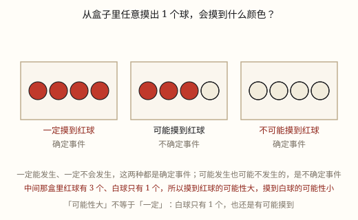

确定事件与不确定事件
一件事会不会发生，分三种：一定、不可能、可能。判断的依据不是「我见过没有」，而是「在这个条件下，所有可能的结果里有几种」。
| 所属主题 | 可能性 |
|---|---|
| 所属模块 | 统计与概率 |
| 课标学段 | 第三学段（5~6年级） |
| 核心素养 | 数据意识推理意识 |
教材定位
人民教育出版社《2024年版》
对应五上第 7 单元「可能性」：事件发生可能性的确定性与不确定性。
课标要求
| 统计与概率·随机现象发生的可能性 | 通过实例感受简单的随机现象及其结果发生的可能性。 印刷第 40 页 行为动词：经历 |
|---|---|
| 统计与概率·随机现象发生的可能性 | 在实际情境中，对一些简单随机现象发生可能性的大小作出定性描述。 印刷第 40 页 行为动词：掌握 |
说明
早上出门前看天气 App：「今天降水可能性 70%」。带不带伞？70% 既不是「一定下雨」，也不是「不会下雨」，它是「很可能下」。生活里的事情大致分成三堆：有的必然发生，有的绝无可能，有的说不准——统计与概率这门学问，就是从分清这三堆开始的。
一定发生和不可能发生，合起来叫确定事件：不用等结果，事先就能断定。太阳从东边升起、水在标准大气压下加热到 100℃ 会沸腾、掷一个普通的骰子出现的点数在 1 到 6 之间——这些都是「一定」。掷出 7 点、从只装了红球的袋子里摸出白球、一个星期有 8 天——这些都是「不可能」。
可能发生也可能不发生的，叫不确定事件，用「可能」来描述：明天下雨、掷出 6 点、种子发芽、路口遇上红灯。它有一个特点：在结果出来之前，谁也不敢打包票。
判断的依据不是感觉，而是条件。把条件写清楚，再列出「在这个条件下，可能出现的结果有哪几种」：结果只有一种而且必然出现，就是「一定」；想要的结果根本不在可能的结果里，就是「不可能」；可能的结果有两种以上、不确定是哪一种，就是「可能」。
条件一变，答案就变。同一句「摸出红球」：袋里 6 个全是红球，它是「一定」；袋里 3 红 3 黄，它是「可能」；袋里全是黄球，它是「不可能」。所以判断之前先问一句：在什么条件下？ 脱离条件谈可能性，怎么答都是错的。
还有一句最容易被大人也说错的话：「可能」不等于「不会发生」，「很可能」也不等于「一定」。天气预报说 90% 有雨，仍然可能一滴不下；说 10% 有雨，也仍然可能下起来。
使用场景
校园生活：抽签决定谁先上台、掷骰子决定游戏顺序、转盘抽奖，都是「说不准」的典型场合。
购物消费：盲盒里有一个隐藏款，拆开之前谁也不知道是哪一款；抽奖转盘上「谢谢参与」永远占多数。
自然现象：明天会不会下雨、种下的种子会不会发芽、今年第一场雪在哪天——都只能给「可能」。
行程出行：走到路口遇到红灯还是绿灯、公交车几分钟后到站，出门前说不准，只能估计。
注意点
先明确条件，再下判断。同一个「摸出红球」，在三种不同的袋子里，答案分别是「一定」「可能」「不可能」。
别把「我没见过」当成「不可能」。第一次见彩虹的人，不能说彩虹不可能出现；没见过的东西，只说明你还没遇到。
别把「很可能」说成「一定」。可能性再大，只要还有另一种结果，就不能用「一定」。
事件要说得具体。「明天天气不好」没法判断，「明天白天下雨」才能判断。
已经发生过很多次，不会改变下一次的类别。连抛 5 次正面，第 6 次仍然是「可能」正面也可能反面，硬币不会「记得」前面出过什么。

图 1：一定、可能、不可能——三种说法对应两类事件
为什么是这样
算理推导
第一步，把事件写成一句能判断真假的话：「从袋中任意摸出一个球，摸到的是红球。」——「任意」两个字很要紧，它排除了「看准了再挑一个」这种可能。写法不清楚，后面的判断全是空的。
第二步，列出这个条件下所有可能的结果。袋里如果只有红球和黄球，可能的结果就是「红」和「黄」两种，一个不多、一个不少。这一步是全部判断的地基。
第三步，对照三种情形：想要的结果只有一种可能、而且必然出现——「一定」；想要的结果根本不在可能的结果里——「不可能」；可能的结果有两种以上、说不准是哪一种——「可能」。
第四步，换条件再走一遍。把袋里的黄球换成红球，「摸到红球」从「可能」变成「一定」；把红球全换成黄球，它又变成「不可能」。同一句话，三个答案，全靠条件。
第五步，回到生活里多想一层：种子发芽的可能性很高，也不是每一粒都发芽；路口大多数时候是绿灯，也不排除赶上红灯。判断完类别，还要记住「可能」里还分大小——那是下一节的事。
动手实验
袋里放 3 个红球、1 个黄球，蒙上眼睛摸 20 次，每次记下颜色再放回去摇匀。记三个问题：红球是不是每次都摸到了？黄球摸到过吗？有没有摸到过绿球？然后把 1 个红球换成绿球，再摸 10 次——「摸到绿球」从「不可能」变成了「可能」。这一步最能说明：类别是由袋子里的东西（条件）决定的，不是由运气决定的。
按场景的例题
例 1（场景：校园生活） 用骰子决定游戏谁先开始
两人一组玩游戏，掷一个普通的正方体骰子（六个面分别是 1 到 6 点）决定谁先。下面三件事分别是什么事件：①掷出的点数在 1 到 6 之间；②掷出 7 点；③掷出偶数点。
解：①骰子六个面就是 1 到 6，只有这一种可能，必然出现——一定。②骰子上没有 7 点，想要的结果不在可能结果里——不可能。③可能出现 2、4、6，也可能出现 1、3、5，说不准——可能。
答：①一定；②不可能；③可能。前两个是确定事件，第三个是不确定事件。
例 2（场景：购物消费） 一箱盲盒里的隐藏款
一箱盲盒 12 个，其中只有 1 个是隐藏款。小舟买 1 个，下面两件事分别是什么事件：①买到的是隐藏款；②买到的不是隐藏款。能说「一定买不到隐藏款」吗？
解：箱子里既有隐藏款也有普通款，买一个之前不知道拿到哪个——①是可能，②也是可能（可能性比①大得多）。因为箱子里的确有 1 个隐藏款，所以「一定买不到」这句话是错的。
答：①可能，②可能。只能说「买到隐藏款的可能性很小」，不能说「不可能」。
例 3（场景：自然现象） 一包种子的发芽情况
一包种子 100 粒，包装上写发芽率约 95%。种下一粒，下面三件事分别是什么事件：①一定发芽；②一定不发芽；③可能发芽，也可能不发芽。哪个说法对？
解：95% 说明大部分会发芽，但仍有约 5 粒不发芽，所以「一定发芽」说不住；同理，绝大多数都会发芽，说「一定不发芽」更没道理。种下的这一粒，两种结果都有可能出现。
答：③对：可能发芽，也可能不发芽。「发芽率很高」说的是可能性大，不是一定。
例 4（场景：行程出行） 路口的信号灯
一个路口只有红、绿、黄三种信号灯，没有转向箭头灯。骑车经过时，下面三件事分别是什么事件：①遇到红灯；②遇到紫色的灯；③遇到的灯是红、绿、黄中的一种。
解：①红灯是三种之一，可能遇到也可能遇不到——可能。②这个路口根本没有紫灯，想要的结果不在可能结果里——不可能。③三种颜色覆盖了全部可能，必然出现——一定。
答：①可能；②不可能；③一定。
常用推论
一定发生和不可能发生都是确定事件；可能发生也可能不发生的是不确定事件。
判断事件类别之前必须先明确条件；条件变了，同一句话的类别可能跟着变。
「可能」包含「很可能」和「不太可能」，它们都还是不确定事件，只是程度不同。
想要的结果如果不在这个条件的可能结果之中，就是不可能事件。
已经发生过多少次，都不会改变下一次的类别；「该轮到另一个了」这种想法站不住脚。
易错点
错天气预报说降水可能性 90%，就认为「今天一定下雨」，出门不带伞；或者说 10%，就认为「一定不下」。
为什么错90% 和 10% 都只是可能性的大小，只要还没到「一定」，就仍有两种结果。把「很可能」或「不太可能」当成「一定」，是最常见的错。
正确90% 带伞更稳妥，但要知道仍可能不下；10% 可以不带伞，但也要接受偶尔被淋。说法上要用「很可能」「不太可能」，不用「一定」。
错小舟第一次见到彩虹，之前从没见过，就说「我们这里不可能出现彩虹」。
为什么错把「我没见过」当成了「不可能」。没见过只是一种经历，不是对结果的穷举。
正确彩虹需要阳光和小水滴同时具备，这个条件满足时它就可能出现。判断要看条件，不看个人经验。
错袋里有红球也有黄球，摸出红球却说「一定摸到红球」。
为什么错忽略了条件：袋里明明还有黄球，「红」不是唯一可能的结果。
正确这是可能事件。只有袋里全是红球时，「摸到红球」才是「一定」。
错连抛 5 次都是正面，就说「第 6 次一定是反面，该轮到了」。
为什么错硬币没有记忆，前 5 次的结果不会累加到第 6 次上。每一次抛掷的条件都一样。
正确第 6 次仍然是「可能正面、也可能反面」，两种结果都还在。
直观理解
出门带伞这件事最能说明三种情况：窗外正下着大雨，带伞是「一定」要带；天上一丝云也没有、预报也说晴，带伞「不可能」用得上；天边压着乌云，带不带就说不准。判断靠的是眼前的条件，不是运气好坏。
一定、可能、不可能，先看条件再开口；条件一换答案变，莫把很可能当一定。